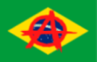
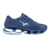

Mundo Alternativo |
 |
| Ideologias políticas / Anarquia no Brasil / Culturas alternativas / Alguns livros anarquistas |
| Mandrake é uma subcultura originalmente brasileira nascida nas periferias. Seu visual é bastante marcante pelas camisetas de time, juliettes, calças largas e baixas e correntes de ouro e prata. O Mandrake é marcado pelo gênero musical FUNK. Os funkeiros mais conhecidos hoje em dia são: DJ Arana, MC Delux, MC Lan , MC Gabzin Jeef FDC, MC Nego da Marcone, Rennan da Penha e muitos outros. Politicamente, o Mandrake se alia com a Anarquia, pelos seus principios parecidos. O mandrake luta contra a dominação do povo pelo estado, principalmente nas periferias. Muitas pessoas acham que é apenas um “estilo”, mas o Mandrake tem muita história. Um apelido usado para mandrakes são "zicas" e "crias". |  |
Punk é uma contracultura que nasceu na Inglaterra na década de 70 como uma forma de protesto contra a Monarquia e a Burguesia do país.
O Punk se caracteriza visualmente com jaquetas de couro, coletes jeans, sempre com bastante personalização, spikes,
moicanos, maquiagens extravagantes, piercings grandes etc. Musicalmente, o Punk se caracteriza principalmente com o
genêro rock, letras sobre o sistema e as vezes com a melodia rápida e agressiva. Algumas bandas PUNKS
no Brasil são Ratos de Porão, Garotos Podres, Charlotte Matou um Cara, Legião Urbana e muitas outras.
Já na política, o Punk é bastante aliado a Anarquia, já que seus principios são iguais.
Aqui no Brasil, o Punk apareceu no final da década de 70, quando o país estava em plena Ditadura Militar. Hoje em dia, em 2022, o Punk virou quase apenas um "estilo", mas o que muitos
não sabem é que o Punk é um movimento político que ainda não acabou.
O Punk quase é transformado em mercadoria, com acessórios e roupas típicas do movimento sendo vendidas
em lojas virtuais que usam trabalho escravo.
Alguns vídeos desse movimento no Brasil no Youtube: |
O movimento Hippie no Brasil teve também início na época da ditadura militar. Diferente do Punk, o
Hippie é um movimento mais pacífico, conhecido pelo seu símbolo da paz.
O visual hippie é muito conhecido pelas camisetas coloridas "tie-diy", calças pantalonas com boca
de sino, estilo unisex. O hippie, originalmente, nasceu na década de 60, junto com o auge da banda
"The Beatles", e inclusive, John Lennon era hippie.
Seus princípios foram um pouco mudados para se encaixar na sociedade e realidade brasileira.
Hoje em dia, o Hippie foi quase completamente transformado em mercadoria, pois vemos camisetas
com o simbolo da paz sendo vendidas já prontas.
Uma das características do hippie são os artesanatos e os mandalas.
Alguns vídeos sobre o movimento no Brasil no Youtube: |
| A subcultura gótica teve seu ínicio na década de 80, no Reino Unido, e teve influências musicais da década de 60 e final de 70, como krautrock e glamrock.
Visualmente, o gótico se caracteriza com roupas escuras, principalmente pretas, maquiagens extravagantes etc.
Musicalmente é uma melodia mais melancólica. Também melancólico, o lado político da subcultura gótica luta contra padrões socias.
A estética adolescente "E-Girl" é conhecida por ter roupado características do visual gótico e ter transformado em mercadoria e
num visual completamente padrão. Além disso tudo, o gótico também está presente no cinema e na literatura, como
"A Família Addams" e "Dracula".
No brasil, não vemos muitas informacões sobre a subcultura, mas muitos sabem que antigamente, os góticos ficavam nos cemitérios.
Uns vídeos importantes sobre o movimento no Brasil no Youtube: |
O Emo vem do termo Emotional Hardcore, que é um gênero musical dos anos 80, caracterizado pelo rock, com letras e melodia mais emocional. No Brasil, esse estilo se popularzou mais nos anos 2000, com bandas como NX Zero, Restart("Emo" colorido), Fresno, Strike etc... Políticamente, o emo tem a ideia melancólica e emocional sobre a sociedade, por isso que, nas músicas EMOCORE (música emo) tem criticas sobre a sociedade e sobre amor (de uma forma MUITO emocional). Visualmente, o emo é caracterizado pelos all-stars, roupas de listas preto e branco ou coloridas, cintos com spikes, cabelos com a franja para o lado, cabelos coloridos etc. |
| Racionais MC's |
Durante o final da década de 1960 e o início dos anos 70, o mundo estava atravessando
um momento de tensão como resultado da Guerra Fria, da invasão estadunidense ao Vietnã
e da crise de 1973.Nesse contexto surge uma nova onda mundial de rebeliões populares e
ascensos operários como resultado do levantamento do Maio Francês, onde a juventude
junto com a classe trabalhadora entram em cena como um novo ator político em escala
global. Grandes inovações culturais foram filhas desse processo. Com novas vanguardas no
cinema, arte, literatura, música. Dentro de todos elas, o Hip Hop surge como um
movimento contracultural no início dos anos 70 no Bronx, na cidade de Nova York.
No evento, ele resolveu tocar apenas o instrumental e os breaks das canções de funk e soul;
o público curtiu demais a mistura e começou a reproduzi-la, transformando a cultura hip hop
em uma das mais poderosas do mundo. No Brasil, o estilo chegou no início da década de
1980, mais precisamente na cidade de São Paulo. Desde então, ele se espalhou pelos quatro
cantos do país e gerou produções originais, cheias de personalidade e inovação. |